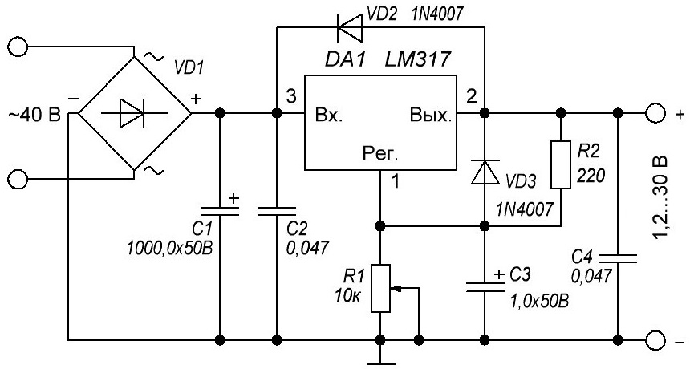

Регулируемый источник питания на LM317
Несмотря на свою кажущуюся простоту, этот блок питания является надёжным источником питания цифровых устройств и имеет встроенную защиту от перегрева и перегрузки по току. Микросхема LM317 внутри себя имеет свыше двадцати транзисторов, хотя снаружи выглядит как обычный транзистор.

Рис. 1 - Схема регулируемого источника питания на LM317
Таблица 1
| Обозначение | Наименование | Номинал | Количество | Примечание |
|---|---|---|---|---|
| DA1 | Микросхема | LM317 | 1 | LM317T |
| C1 | Конденсатор электролитический | 1000 мкФ / 50 В | 1 | |
| C2, C4 | Конденсатор | 0,047 мкФ | 2 | |
| C3 | Конденсатор электролитический | 1 мкФ / 50 В | 1 | |
| R1 | Резистор переменный | 10 кОм | 1 | |
| R1 | Резистор постоянный | 220 Ом / 0,25 Вт | 1 | 0,5 Вт |
| VD1 | Выпрямительная сборка | на ток не менее 1 А | ||
| VD2, VD3 | Диоды | 1N4007 | 2 | на ток 1 А |
Питание схемы рассчитано на напряжение до 40 В переменного тока, а на выходе можно получить от 1,2 до 30 В постоянного, стабилизированного напряжения. Ток на выходе до 1,5 А. Если потребляемый ток не планируется выше 250 мА, то радиатор не нужен. При потреблении большей нагрузки, микросхему поместить на теплопроводную пасту к радиатору общей площадью рассеивания 350–400 мм2 или больше. Подбор трансформатора питания нужно рассчитывать исходя из того, что напряжение на входе в блок питания должно быть на 10–15% больше, чем планируете получать на выходе. Мощность питающего трансформатора лучше взять с хорошим запасом, во избежание излишнего перегрева и на вход его обязательно поставить плавкий предохранитель, подобранный по мощности, для защиты от возможных неприятностей.
Перед подключением к схеме питающего напряжения, обязательно проверьте правильность монтажа и пайки элементов схемы. После вкючения, вращением переменного резистора установить желаемое напряжение на выходе.
Источники:
sdelaysam-svoimirukami.ru - Простой регулируемый стабилизированный блок питания